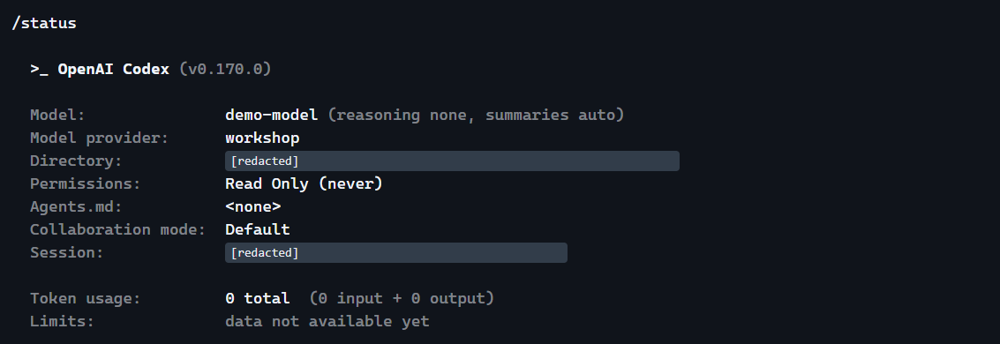
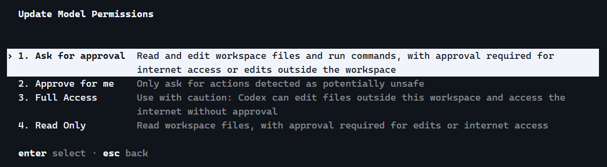
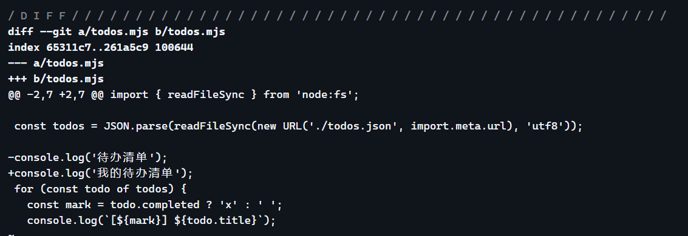
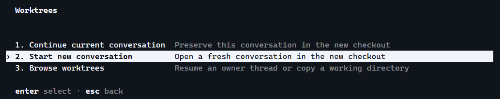
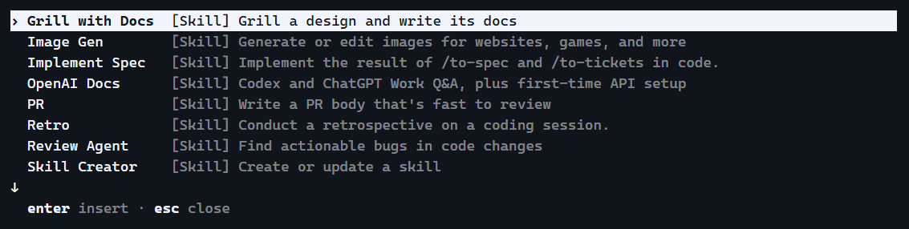
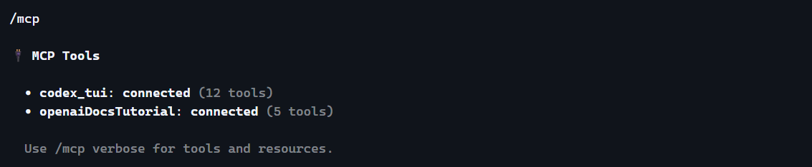
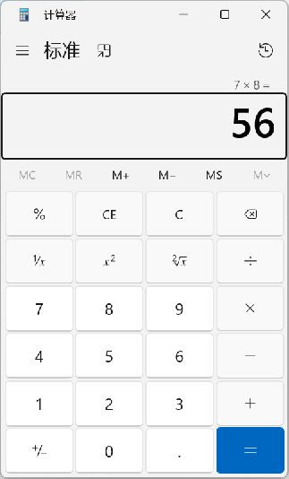
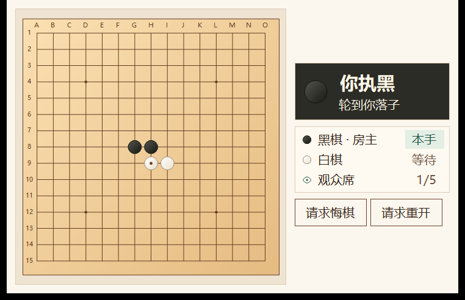
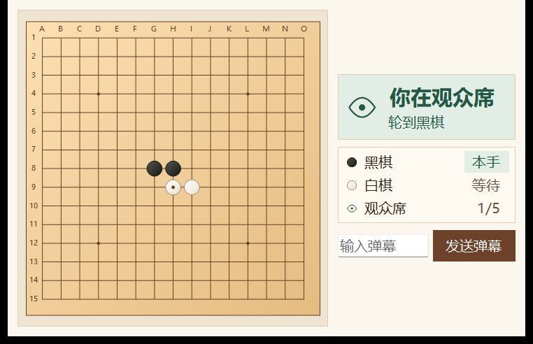

01 安装，打开同一个练习
后面的章节会明确区分三个输入位置。PowerShell 运行 git、node、codex 等命令。运行 codex 后，你进入 Codex CLI，在里面输入 /status 或用中文描述任务。桌面客户端指 ChatGPT 桌面应用里的 Codex 界面，在聊天输入框发送提示词。
安装 CLI
-
从官方渠道安装 Git for Windows、Sourcetree 和 Node.js。安装后，新开一个 PowerShell 窗口。
-
在 PowerShell 运行下面的命令。前三条分别检查 Git、Node.js 和 npm，第四条安装 CLI。
git --version node --version npm --version npm install -g @openai/codex codex --version -
运行
codex，首次打开时按界面提示选择使用 ChatGPT 登录。登录完成后，可在 Codex CLI 输入/quit回到 PowerShell。
安装后若提示找不到命令，先关闭并重开 PowerShell。若 PowerShell 明确提示 npm 安装的 codex.ps1 无法运行，可试 codex.cmd --version 和 codex.cmd。相关入口见 Codex CLI 官方指南。
安装桌面客户端
在 Windows 桌面应用官方指南 下载并安装 ChatGPT 桌面应用，登录后从 ChatGPT 下拉菜单选择 Codex。先用 CLI 做基础练习。在第 04 章体验 Computer Use，或到第 05 章用 Add new project（Ctrl+O）打开同一个练习目录。
flowchart LR
shell["PowerShell 运行 codex"] --> terminal["CLI 输入 /status 与任务"]
app["桌面客户端选择 Codex"] --> chat["本地项目里发消息"]
terminal --> workshop["同一个 todo-workshop 文件夹"]
chat --> workshop
准备独立的待办练习
如果你在 GitHub 上看教程，回到仓库首页选择 Code → Download ZIP，解压后找到含有 README.md 和 practice 的目录。在 PowerShell 用 Set-Location 进入它，路径含空格时用引号包起来，可以从资源管理器复制路径。
运行 Get-ChildItem 确认位置。下面的命令把练习复制到一个单独的文件夹，然后显示路径。若提示 todo-workshop 已存在，把目录名换成一个未使用的名字后再运行。
$workshop = Join-Path $env:USERPROFILE 'todo-workshop'
if (Test-Path -LiteralPath $workshop) { throw 'todo-workshop 已存在，请换一个目录名。' }
Copy-Item -LiteralPath .\practice -Destination $workshop -Recurse -ErrorAction Stop
Set-Location -LiteralPath $workshop
Get-Location
打开 Sourcetree 教程总结（飞书），并在 Sourcetree 新标签页用 Create 在刚才的目录创建本地 Git 仓库。若 Create 无法选中已有目录，在这个目录运行 git init，再回 Sourcetree 用 Add 打开。
在 File Status 中只选 todos.mjs、todos.test.mjs 和 todos.json，确认三项都出现在 Staged files，填写 Save todo exercise baseline 后点 Commit。暂存就是选定哪些改动进入下一次提交。在 Log / History 看到这条提交就完成了，提交记录保存在本机。界面操作可参照 Atlassian 的 File Status 说明。
回到 PowerShell，运行以下命令。预期程序打印三条待办，测试末尾有 pass 1 和 fail 0。
node .\todos.mjs
node --test
待办清单
[x] 安装 Codex
[ ] 读懂 Git 差异
[ ] 完成 Skills 实战
在 PowerShell 运行 Get-Location 确认当前位置，然后运行 codex。在 Codex CLI 输入 /status，看 Directory 是否指向 todo-workshop。下面是独立演示环境中实际的 CLI 画面，模型名为示例，目录和会话 ID 已遮挡。

确认目录后，进入 02 CLI 最常用的指令。
02 CLI 最常用的指令
在 PowerShell 回到 todo-workshop。先运行 Get-Location 确认位置，再运行 codex。下面这些带 / 的指令输在 Codex CLI 的输入框。
| 输入 | 何时用 |
|---|---|
/status |
核对会话目录、模型和权限信息 |
/permissions |
查看或切换权限，第一次读代码可选 Read Only |
/model |
查看并选择当前对话可用的模型 |
/mention |
把指定文件带入提示词，例如选中 todos.mjs |
/plan |
开工前先让 Codex 给方案，确认范围和验收步骤 |
/diff |
看当前工作区的文件改动 |
/review |
请求 Codex 审查尚未提交的改动 |
/new、/resume |
开一段新对话，或接着做已有对话的任务 |
/worktree |
让一个任务在独立目录里改代码，见 Git 与 Worktree |
/skills |
浏览可用的 skills，也可输入 $ 选择 |
/quit |
返回 PowerShell |
输入 / 可打开本机版本的命令列表。界面和选项名称以本机版本为准。参见 CLI 斜杠指令。
从读代码到改一行
先在只读权限下用 /mention 选 todos.mjs，再发送下面这段。
请看 todos.mjs、todos.json 和 todos.test.mjs。说清待办数据在哪里、如何打印、如何运行测试。不修改文件。
核对它是否指出 todos.json 是数据、todos.mjs 是入口、node --test 是测试命令。然后用 /permissions 选择 Ask for approval，允许写入练习目录、超出权限时请求批准。

再发下面这段。
只改 todos.mjs，把列表标题从「待办清单」改成「我的待办清单」。保留三条任务和它们的顺序。运行 node todos.mjs 和 node --test，告诉我实际结果。
输入 /diff 查看差异。也可以用 /review 选审查未提交的改动，得到一份额外检查。
下面是演示副本中的实际 /diff 画面。- 行是旧标题，+ 行是新标题。回到 Sourcetree，打开练习仓库的 File Status，点选 todos.mjs 看同一处差异，并检查文件列表里是否只有这一个改动。

在 PowerShell 自己验收实际输出，应显示「我的待办清单」，三行任务保持原样，测试通过。
node .\todos.mjs
node --test
练习撤回
在 Sourcetree 的 File Status 里点开 todos.mjs，确认只有刚做的标题改动。它应还在未暂存区。对这一处差异点 Discard Hunk。若版本只有文件级的 Discard，先确认该文件里的改动都可丢弃。再运行 node .\todos.mjs，确认回到「待办清单」。Sourcetree File Status 说明
接下来做 Git 与 Worktree。
Git 与 Worktree
在 Sourcetree 打开 todo-workshop，先认清三个入口。File Status 看本次改动和要暂存的文件，Log / History 看已经保存的提交，Branches 看当前开发分支。提交保存本机版本，Push 才向远端发布。第 01 章的首个提交在本机就能看到。
| 你想做什么 | Codex 有什么入口 |
|---|---|
| 让 Codex 改你正在编辑的这一份文件 | CLI 在原项目目录运行 codex，或在桌面客户端选择 Local。 |
| 逐行看它改了什么 | CLI 用 /diff，客户端用 Review 面板。也可以在 Sourcetree 查看同一目录的差异。 |
| 请 Codex 按需求检查改动 | 输入 /review，选择未提交的改动，或与基础分支比较。 |
| 开一项独立任务 | CLI 用 /worktree，或在 PowerShell 运行 codex --worktree。客户端在新对话选择 Worktree。 |
| 把工作树里的成果留下来 | 在客户端的工作树用 Create branch here 保存到一个有名字的分支，随后提交。要回日常目录接着做，使用 Hand off → Local 移动对话与改动。 |
| 暂存、提交或发布 | 客户端 Review 面板也能暂存、撤回、提交和推送。跟练时用 Sourcetree 完成这些 Git 操作。 |
Codex CLI 指令 · Codex 代码审查 · Codex Worktree 官方指南
用两个目录验证 Worktree
分支记录一条开发线。Worktree 是连接到同一 Git 仓库的另一个工作目录。它和原目录共享提交历史与分支信息，各自有一份可编辑的文件。同一个分支默认只能在一个工作树中检出。Git 工作树文档
flowchart LR
history["同一个 Git 仓库<br/>共享提交历史"] --> local["原目录 Local<br/>标题是「待办清单」"]
history --> isolated["Codex Worktree<br/>改成「工作树练习」"]
-
在 Sourcetree 的 Log / History 确认有起点提交，再到 File Status 确认第 02 章的标题改动已经撤回。这个练习从干净的工作区开始，便于观察两边的区别。
-
任选一个入口新建工作树。
- CLI 从练习目录的空闲 Codex 对话输入
/worktree，选择 Start new conversation。也可以退出到 PowerShell，在同一目录运行codex --worktree。用/status确认Directory已切到另一个目录。 - 客户端 选中
todo-workshop后开一个新对话，在输入框下选 Worktree，以 Sourcetree 当前显示的分支为起点。

- CLI 从练习目录的空闲 Codex 对话输入
-
在新对话发送下面的任务。
请在当前工作树里只把 todos.mjs 的标题改成「工作树练习」。
运行 node todos.mjs 和 node --test，并报告当前目录和结果。
你可以在原目录的 PowerShell 运行 git worktree list，核对列表里有两个不同的路径。回到原目录运行 node .\todos.mjs，标题应仍为「待办清单」。在报告的工作树目录执行同一命令，应看到「工作树练习」。CLI 可用 /diff 检查工作树的差异。客户端可打开 New tab → Terminal 验证具体输出。
工作树起点有时会显示 detached HEAD，意思是它从某个提交开始，还没挂在一个有名字的分支上。想保留成果时，先建分支并确认提交；若只做本课演示，进入后续章节时继续选择 todo-workshop 原目录。若 Git 提示分支已在另一个工作树使用，先去该工作树查看改动；需要接到日常目录时再从客户端做 Hand off。
下一章 配置 Codex 与 Magpie。五子棋实战的 implement-spec 会把这个做法用到多个工单。
03 Codex 配置与 Magpie
配置写在哪里
| 文件 | 它解决的问题 | 练习里的例子 |
|---|---|---|
~/.codex/config.toml |
当前用户的 Codex 设置 | 设置个人的默认权限 |
.codex/config.toml |
受信任项目的 Codex 设置 | 给特定项目设定工作区权限 |
AGENTS.md |
告诉 Codex 进入这个项目后怎么工作 | 修改代码后运行 node --test |
skill 文件夹里的 SKILL.md |
告诉 Codex 如何执行一套可复用的流程 | 先写失败的测试，再实现功能 |
.codex/rules/*.rules |
决定符合条件的命令请求在沙箱外运行时怎么处理 | 批准前先询问 |
.codex/hooks.json |
在指定事件发生时自动执行操作 | 启动新会话时显示练习提示 |
config.toml 的 [mcp_servers.*] |
给 Codex 接入可调用的工具和数据 | 查询 OpenAI 官方文档 |
~ 表示当前用户的主目录。在 PowerShell 可以运行 notepad "$env:USERPROFILE\.codex\config.toml" 打开默认位置的个人配置。若设置过 CODEX_HOME，个人配置位于那个目录。下面的示例允许在工作区写入，超出权限时可请求批准。参见 Codex 配置指南。
sandbox_mode = "workspace-write"
approval_policy = "on-request"
先通过上节的 /permissions 体验效果。若确实要在配置文件里改，在已有文件里更新相同的顶层键，避免重复添加。组织管理的权限可以限制这些设置。
在 todo-workshop 根目录新建 AGENTS.md，复制下面两行并保存。开一个新对话，问 Codex「这个练习对运行测试有什么要求？」如果它能指出 node --test，就完成了项目规则的练习。这个文件也会在实战中用到。参见 AGENTS.md 官方说明。
# 待办练习
修改代码后运行 `node --test`，并用简体中文概括实际验证结果。
安装 Magpie 并导入 Skills
本课把 Magpie 用作技能库。Codex 继续使用你在第一课完成的登录。
flowchart LR
source["Matt Pocock 的 GitHub 仓库"] --> library["Magpie 的 Library → Skills"]
library --> target["分发目标勾选 Codex"]
target --> cli["CLI 运行 /skills → List skills"]
-
打开 Magpie 官方发布页。在 Assets 选带图形界面的 Windows 包
magpie-windows-amd64.exe；如果系统是 ARM64，选magpie-windows-arm64.exe。在 Windows 的「设置 → 系统 → 系统信息」可以查看系统类型。安装后打开 Magpie。 -
进入 Library → Skills，从 GitHub 添加
https://github.com/mattpocock/skills。按 第 05 章的准备清单 选中主流程和依赖的技能，分发目标勾选 Codex。若结果只出现部分技能，可按名字逐个导入对应的 GitHub 文件夹。 -
关闭并重新打开 Codex CLI，输入
/skills后选择 List skills，或直接输入$tdd搜索。能看到并选中tdd就说明 CLI 能发现它。 -
用下面的只读提示确认工作流可以调用。期望它说明 TDD 的顺序，并停在讨论阶段。
$tdd 请先解释你会怎样用红灯、绿灯验证这个项目的一个新功能。 只说明步骤，不写测试、不修改文件。
如果 Magpie 显示已安装、Codex 只显示 magpie-skills，检查该 skill 是否经由 Skill Router 分发。要按本教程直接选中独立名称，把这几个技能设为 Direct，再开新对话。如果出现同名 skill，先确认它的来源，只保留一种分发方式。文件位置和分发模式见 Magpie 技能库文档。原作者另有 Codex 插件安装方式，已经从 Magpie 导入时可继续使用当前这一套。
下图是本机 Codex CLI 用演示项目中的技能文件打开的选择器。找到 Grill with Docs 对应的 grill-with-docs 后，按 Enter 可把它插入当前输入。

补充练习
这些小练习可以单独做。AGENTS.md 写日常约定，Skill 写可复用的步骤。需要约束命令、在某个事件自动执行操作，或接入外部工具时，再分别用 Rules、Hooks 和 MCP。
Rules
prefix_rule 按命令及参数的开头匹配。这个示例只检查 node --version，当它请求在沙箱外运行时，prompt 表示先询问。
在练习目录保存一个 demo.rules。放在根目录方便用验证命令直接读取。如果将来要让规则随受信任的项目加载，配置入口是 .codex/rules/。参见 Rules 官方说明。
prefix_rule(
pattern = ["node", "--version"],
decision = "prompt",
)
在 PowerShell 验证两个命令的匹配结果。验证只计算策略结果。第一条的 JSON 应显示 prompt，第二条应没有匹配规则。
codex execpolicy check --pretty --rules .\demo.rules -- node --version
codex execpolicy check --pretty --rules .\demo.rules -- node --help
Hooks
Hook 在特定事件发生时执行命令。下面的 SessionStart 示例在新会话开始时给你一条可见的提示。用单独的练习副本，从它的根目录启动 CLI。
在该副本的 .codex 文件夹里创建 hooks.json 和 session-start.cjs。将下方内容保存到 .codex/hooks.json。
{
"hooks": {
"SessionStart": [
{
"matcher": "^startup$",
"hooks": [
{ "type": "command", "command": "node .codex/session-start.cjs" }
]
}
]
}
}
将这行保存到 .codex/session-start.cjs。
console.log(JSON.stringify({ systemMessage: '待办练习 Hook 已运行' }));
从副本根目录打开 Codex CLI，用 /hooks 查看来源，读完这两个文件再信任该 hook。退出并重新启动一个 CLI 会话，观察是否出现「待办练习 Hook 已运行」。如果列表为空，检查当前目录和该项目的信任状态。参见 Hooks 官方说明。
MCP
MCP（Model Context Protocol）让 Codex 能调用外部工具。这里用只读的 OpenAI Docs MCP 查公开文档。
在 PowerShell 登记并检查服务。
codex mcp add openaiDocsTutorial --url https://developers.openai.com/mcp
codex mcp list
重新打开 CLI，在 Codex 的输入框运行 /mcp，查看服务及工具是否可用。试发「用 openaiDocsTutorial 查官方文档，告诉我 /status 能看到什么，并给出来源」，核对对话里出现的 MCP 工具调用。参见 MCP 配置指南和 OpenAI Docs MCP。

接下来可以做桌面客户端的 04 Computer Use，也可以直接进入 05 Matt Pocock Skills 实战。
04 Computer Use（客户端选练）
本章使用 ChatGPT 桌面应用的 Computer Use。让 Codex 打开 Windows 计算器并验证 7 × 8，完成标志是计算器窗口显示 56。本章可选，可以直接进入 05 Matt Pocock Skills 实战。
flowchart LR
settings["桌面客户端：Settings → Computer use"] --> chat["打开 Codex 对话"]
chat --> request["指定 Windows 计算器和算式"]
request --> result["检查计算器窗口里的 56"]
-
打开 ChatGPT 桌面客户端，选择 Codex。
-
到 Settings → Computer use 找到 Any App 或 Computer Use 的设置入口。按界面提示完成设置；若工作区有应用范围或权限限制，以它显示的选项为准。
-
在 Windows 开始菜单打开「计算器」，切换到标准模式并保持窗口可见。回到 Codex 对话，发送下面的提示。若弹出权限提示，确认请求的应用是计算器。
请用 Computer Use 操作 Windows 的「计算器」窗口，用界面计算 7 × 8。 按下等号后查看屏幕，告诉我窗口实际显示的结果。只操作计算器。 -
看计算器里的数字，并对照下图。若没看到计算器被操作，检查客户端是否真正调用了 Computer Use、权限是否允许当前应用，以及计算器是否在当前活动桌面。官方入口见 Computer Use 指南。

图为本机实际操作后的计算器窗口，只包含演示算式和结果。
接下来在同一个客户端做 05 Matt Pocock Skills 实战。
05 Matt Pocock Skills 实战 · Windows 五子棋
任务目标 在 Codex 桌面客户端从空的 Git 仓库做一个 Windows 五子棋。最小交付是双击 Gomoku.exe、创建人机房并下一局。想做完整版本，再加局域网对战、观战、弹幕和断线续局。本章用一次真实会话的截图、规格、工单和验收记录讲解。
原会话先做出了可玩的版本，试玩时才发现黑棋、白棋和观众在界面上不容易区分，于是补做了三个原型并选择 A 版。本课把先试界面、再定规格放进需求会话。想先练一个没有 GUI 的小任务，可以做待办筛选短练习。
跟着原对话看 打开五子棋实战会话（HTML）。里面有脱敏的原话、A/B/C 原型和 Windows 实拍。跟练时把 prototype 放在 grill-with-docs 之后，选定方案再写规格。
实战前的准备
- 用 Sourcetree 为一个新的练习目录创建本地 Git 仓库，再用 Codex 桌面客户端打开它，选择 Local 开一个对话。做 Windows 版时，开发机需要 .NET 10 SDK，可用
dotnet --list-sdks检查。Git 与 Worktree · .NET 10 下载 - 用 Magpie 装主流程的
grill-with-docs、prototype、to-spec、to-tickets、implement、implement-spec、diagnosing-bugs和retro。一起装setup-matt-pocock-skills、triage、grilling、domain-modeling、tdd、code-review和writing-for-agents。对话里输入$选技能，再接上提示词正文。上游技能清单 - 第一次在这个仓库用 Matt 的技能，发
$setup-matt-pocock-skills 使用本地 Markdown，保留默认分流标签，用 AGENTS.md 和单一术语表。按界面提示确认。打开AGENTS.md，核对它指向docs/agents/issue-tracker.md、docs/agents/triage-labels.md和docs/agents/domain.md。以后规格和工单放进.scratch/，标签和领域文档的约定也能从这三个入口找到。
在同一个对话完成需求与拆单
1. grill-with-docs 问清楚玩家能做什么
$grill-with-docs 我想做一个 Windows 11 x64 的五子棋。发给朋友一个 exe，双击就能玩。
支持 15×15 棋盘、人机和同一局域网双人对战。请先分轮问我入房、观战、悔棋和断线怎么处理。
把确认的术语写进 GLOSSARY.md。方案确认前先停在讨论和原型阶段。
实战确认了三个会改变使用体验的决定。访客先入观众席，再选空位上席。房主建人机房时选难度，对局中固定。房主开房时可选断线立即中止或限时续局，等待范围是 15–180 秒，默认 30 秒。
打开项目根目录的 GLOSSARY.md，可以看到「对战席」和「观众席」各自指什么。讨论和测试都可以沿用这些名字。遇到以后难改的架构取舍时，还可用 ADR 记录决定和理由。
观众席
供玩家观看对局和发送弹幕的位置。其他玩家进入房间后默认在观众席，可以选择空闲的对战席参加对局。
摘自本次实战的 GLOSSARY.md。上游 grill-with-docs
2. prototype 对比三版，选定一版
$prototype 先做一个可点的棋室原型，给我三版布局。
让我在同一页面切换 A/B/C、黑棋/白棋/观众，用同一局棋比较身份、轮次和操作入口。
等我选定，再把选中的布局与交互要求整理成可写进规格的结论。
打开原型，用三个身份各看一遍。黑棋和白棋能否一眼认出自己的身份和当前轮次？观众能否直接找到弹幕输入？实战提供了三种布局。
| 方案 | 打开后看什么 |
|---|---|
| A 棋室侧栏 | 左侧棋盘，右侧用大卡片显示身份和是否轮到自己。 |
| B 双席对阵 | 黑、白身份分列棋盘两侧。B 版实拍 |
| C 沉浸棋盘 | 棋盘居中，顶部标身份和轮次，观众在底部发弹幕。C 版实拍 |

实战选择了 A。你可以回复「选 A。保留左棋盘右侧栏，黑棋、白棋和观众各有清晰身份卡，观众能从侧栏发弹幕。」这样 to-spec 拿到的是可以实现和验收的界面决定。原会话的交互原型文件是 src/Gomoku.App/LanMatchView.prototype.html，保存在独立分支 codex/gomoku-room-ui-prototype。留一个原型入口和选型结论，切换对话后也能追溯。上游 prototype
3. to-spec 把已确认的结果写成规格
$to-spec 把刚确认的规则和 A 版界面写入 .scratch/gomoku/spec.md。
先让我确认用什么来验收规则、界面和发布包。确认后保存到本地事项追踪器。
本轮只交付规格，等我明确同意再写正式代码。
当 Codex 请你确认测试入口时，可以答「用房间会话验证落子、席位、轮次和断线结果。用发布版 Gomoku.exe 验证双击、对战和观战。界面检查三个身份是否清楚。」原会话的 spec.md 有 38 条用户故事，记录了交付范围、关键决定和测试入口。其中一条是「等待期间保留原棋盘和轮次。」跟练时打开该文件，确认 A 版的可见要求也已写进去，例如观众卡显示身份和弹幕入口。上游 to-spec
4. to-tickets 拆出可以单独验收的工单
$to-tickets 读 .scratch/gomoku/spec.md。先列出能分别演示和验收的工单，以及它们的依赖。
我确认后，再在 .scratch/gomoku/issues/ 下按顺序保存，每张工单一个 Markdown 文件。
查看草稿时，先问自己「做完第一张能不能试玩」。本例的第一张可以双击程序完成人机首局。后面的每一项也有一个可见结果。确认拆分后再让 Codex 写文件。技能名在上游用复数 to-tickets。上游 to-tickets
| 工单 | 做完能看到什么 | 先完成 |
|---|---|---|
| 01 | 双击程序，完成第一局人机。 | 无 |
| 02 | 可以选择三档人机难度。 | 01 |
| 03 | 从局域网大厅加入房间并完成双人对局。 | 01 |
| 04 | 观众能中途进房，看到当前棋盘和后续落子。 | 03 |
| 05 | 观众能发送滚动弹幕。 | 04 |
| 06 | 对手可以确认或拒绝悔棋、重开。 | 03 |
| 07 | 棋手断线后按房间设置中止或续局。 | 04 |
| 08 | 交付单文件，并在目标设备上验收。 | 02、05、06、07 |
打开 .scratch/gomoku/issues/07-disconnect-and-rejoin.md。拆单完成时，这张工单用如下字段说明怎么开工和验收，实施后再更新完成状态和检查结果。原会话为这 8 张工单记录了 36 项验收标准。
# 07: 按房间规则处置断线并恢复对局
**Blocked by:** 04 在双人房和人机房实时观战
**Status:** ready-for-agent
- [ ] 等待期内恢复原席、棋盘和轮次，即使观众席已满。
提交需求文件，再选择会话
在 Sourcetree 提交这次生成的 AGENTS.md、docs/agents/、GLOSSARY.md、.scratch/gomoku/spec.md 和 .scratch/gomoku/issues/，从 Log / History 复制提交号。规格里要能找到 A 版选型，工单里要能找到验收条件。这样新会话或新工作树都有明确的起点。
- Compact 如果当前 Codex 对话的
/菜单提供/compact，可压缩当前对话的上下文，等它完成后留在这里。 - 新开 Session 在同一项目选择 Local 开新对话。第一条发下方实施指令，带上提交号和对应文件路径。
选任一方式后，明确回复同意开工。原实战的规格也用 Implementation: authorized 记录了用户的正式授权。之后在执行对话里继续做验收、排错和复盘。Codex 会话说明
5. 执行工单或整份规格
只做一个 Issue，用 implement
第一次跟练可以先照下方做 01。Issue 就是工单。implement 读取指定工单，按约定补测试、做实现、审查，再把成果提交到当前分支。先在 Sourcetree 选好练习分支。上游 implement
$implement 我批准执行 .scratch/gomoku/issues/01-play-first-ai-match.md。
起点提交是 <填写提交号>。先报出工单标题和验收项，再实现这张工单。
请在 Windows 上从单文件发布包打开人机首局，并记录实际验证结果。
把 01-play-first-ai-match.md 换成你的第一张工单文件名，提交号用刚才复制的值。这条是跟练用法。原会话走的是整份规格路线，其中 01 的 ## Answer 记有首局实现及 7 项房间会话检查的结果。读这段时，可以把工单的「玩家能做什么」和这次「实际测了什么」逐条对照。
做完整 Spec，用 implement-spec
$implement-spec 我批准执行 .scratch/gomoku/spec.md。
起点提交是 <填写提交号>。先读 GLOSSARY.md、规格和 .scratch/gomoku/issues/。
按工单依赖在本地集成分支实施。每张工单记录验证结果，最后告诉我发行包位置和待人工验收项。
implement-spec 以整份规格为入口，理解工单之间的依赖。可开工的工单由子代理在各自的工作树里实现，再合入集成分支。原实战合到了 gomoku-integration，产物包括应用代码 src/Gomoku.App/、规则与会话代码 src/Gomoku.Core/、自动检查 tests/Gomoku.Checks/、发行包 dist/win-x64/Gomoku.exe，以及 README 里的构建和打包方法。Git 与 Worktree · 上游 implement-spec
双击自己生成的 Gomoku.exe，先建一局人机确认能落子。完整版本再分别做棋手和观众，核对原型选中的布局。下图是原案例的 Windows 版，实拍已裁去房间标识。观众视角实拍


6. 遇到 Bug，用 diagnosing-bugs
$diagnosing-bugs 房主选择「等待重连」。访客棋手关窗，在等待期内重新加入同一房间却不能继续下棋。
先复现并记录看到的结果。修完后用同样步骤确认能回原席并下一手。
也请检查观众退出后能否重进继续观战。
原会话发现，点击退出或关窗都被当作永久离房。保留席位后还有一个问题，重新启动的客户端缺少续局凭据，只能进入观众席。修复后，访客可在原设备、同一 Windows 账户下限时回来，恢复原席、棋盘和轮次。观众重进也单独验证了棋盘同步、后续落子和弹幕。
这一步留下了可重跑的证据。工单 07 的 ## Comments 记录旧版症状和修复后结果，tests/Windows/smoke.ps1 保留了关窗续局场景。原项目从根目录运行 .\tests\Windows\smoke.ps1 -Scenario GuestClose 即可复验这个场景。跟练时用自己项目的同一条复现路径先跑失败、再跑通过。上游 diagnosing-bugs
7. 用 retro 改进下一次实施
$retro 复盘刚才执行 implement 或 implement-spec 的对话、工单和实际验收。
挑出最拖慢实施或最容易误判的一件事，说明发生了什么、下次如何提前发现。
优先复用项目已有的测试或文档，先让我选要落地的改进。
retro 会在对话里排出改进建议。原会话里，用户后来回复「开始执行」，这些改进才写进项目。
| 这次遇到的情况 | 落地后下次怎么用 |
|---|---|
| 窗口续局回归依赖开发机目录下的脚本。 | tests/Windows/smoke.ps1 随仓库保存，能复验关窗续局和最小窗口等场景。 |
候选包曾更新，dist 里还是旧包。 |
scripts/publish.ps1 通过回归后才替换发行包并校验哈希。 |
| 核心检查靠临时记得运行。 | .githooks/pre-commit 在该练习仓库提交时运行 scripts/check.ps1。 |
| 开工时机，以及断网、关窗、点退出的行为曾有误解。 | spec.md 记录开工授权，并用角色与操作的表格明确续局和中止条件。 |
| 终端找到的 SDK 版本低于项目要求。 | scripts/dotnet.ps1 和 README 说明如何定位或指定 SDK。 |
复盘改进后的发布记录为 32 项核心检查和 9 个 Windows 窗口场景通过。工单 08 仍是 ready-for-human，等两台实体设备的局域网联测和未额外安装 .NET 的 Windows 11 验收。新人跟练时可以像这样把「已测」和「等人实测」都写进工单。上游 retro
Windows 五子棋实战会话
2026 年 11 月 24 日 · Codex 桌面客户端 · Set up Matt Pocock skills
按原会话顺序摘录的对话，保留关键提问、回复和交付结果。本机路径与工具日志已省略，配图沿用教程中的脱敏截图。每段末尾的「对应产物」可和教程里的文件名对照。
配置项目 · setup-matt-pocock-skills
Codex 接着展示配置草稿，用户确认把入口写入仓库根目录。
对应产物 AGENTS.md 指向 docs/agents/ 下的追踪方式、标签和领域文档约定。这个案例选择了本地工单，因此后面的规格和工单都写进 .scratch/。
问清五子棋规则 · grill-with-docs
对应产物 GLOSSARY.md 把「对战席」和「观众席」定为后续规格和测试共同使用的术语。第二轮的退出规则后来因实际试玩而修订，见续局排错。
停下提前实施并写规格 · to-spec
上一轮答完「全部同意」后，Codex 提前开始了实现。用户打断了这一轮，并明确要求先审规格。
对应产物 .scratch/gomoku/spec.md 记录了 38 条用户故事和验收方式。比如用房间会话检查规则和断线行为，用发布版 .exe 验证双击启动及观战。
拆工单与压缩上下文 · to-tickets
会话此时记录了一次上下文压缩。压缩前八张工单还在草拟阶段，压缩后仍在同一对话。
对应产物 .scratch/gomoku/issues/ 下有八份 Markdown。01-play-first-ai-match.md 无前置依赖，07-disconnect-and-rejoin.md 则等实时观战工单完成。
授权实施，交付首版 · implement-spec
实施过程中会话中断。用户恢复会话后，Codex 继续完成核对并交付首版。
对应产物 整份规格的实现合入 gomoku-integration，可试玩文件是 dist/win-x64/Gomoku.exe。如果只想跟做一张 Issue，第 05 章提供了用 implement 执行工单 01 的示例。
补做原型，选择 A 版 · prototype



对应产物 原项目的浏览器原型是 src/Gomoku.App/LanMatchView.prototype.html，归档在 codex/gomoku-room-ui-prototype 分支。选中 A 后，Windows 发布包才换成侧栏版。
复现并修复关窗续局 · diagnosing-bugs
对应产物 工单 07-disconnect-and-rejoin.md 留下修复和复测结果。后续复盘把关窗退出、重新入房到继续落子的检查纳入仓库，入口是 tests/Windows/smoke.ps1 的 GuestClose 场景。
复盘并改进发布流程 · retro
对应产物 .githooks/pre-commit 接入提交检查，scripts/publish.ps1 把验收接进发布，spec.md 补记实施授权及退出行为。发布工单 08 仍保留两项人工验收，两台实体设备的局域网联测，以及未额外安装 .NET 的 Windows 11 启动。